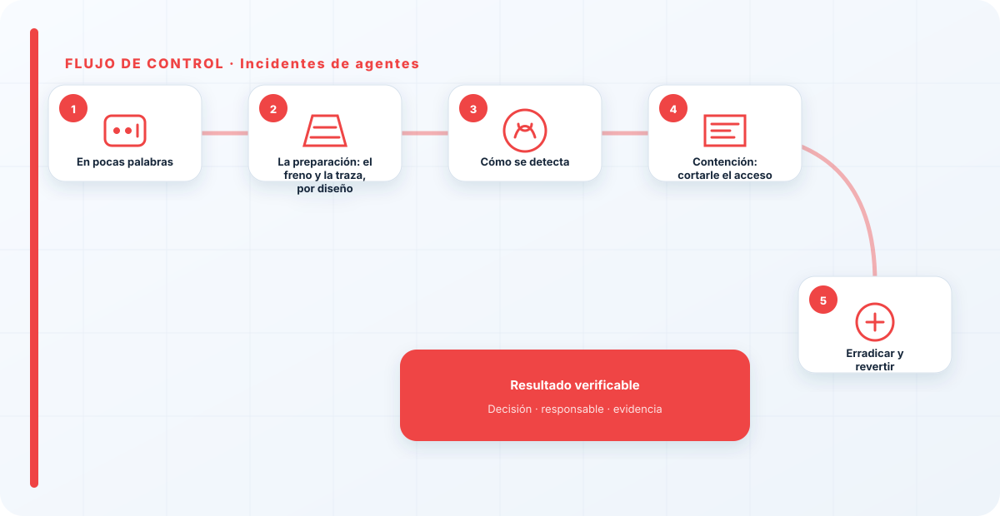
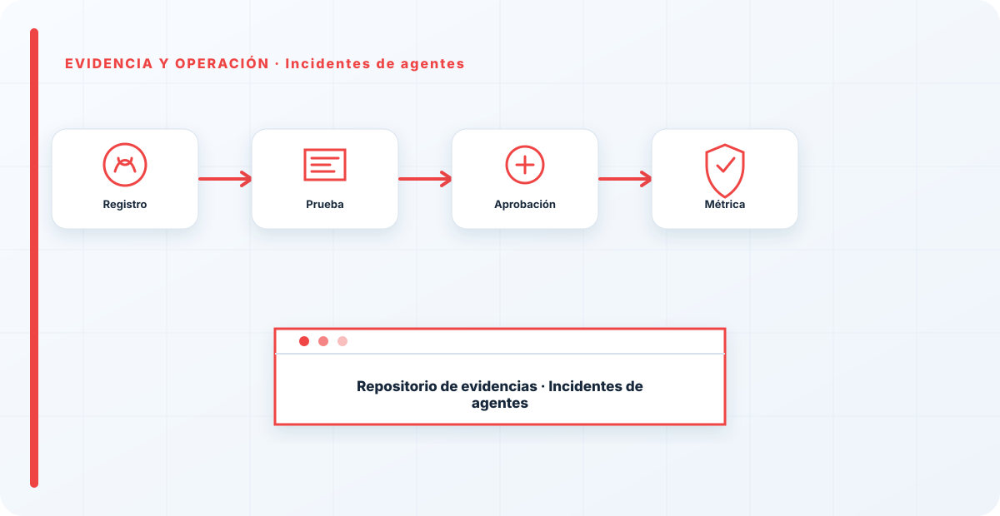

En pocas palabras
Un incidente de agente es más grave que uno de LLM por una razón de fondo: el agente actúa. Cuando algo va mal —por una inyección, un fallo o una herramienta comprometida— no hablamos de respuestas malas, sino de acciones reales: correos enviados, datos borrados, código ejecutado, operaciones lanzadas. La respuesta tiene que ser rápida porque el daño se acumula con cada paso que da el agente, y un agente comprometido no se toma descansos ni espera a que alguien mire el correo. Por eso, más que ningún otro incidente de este pilar, el de agente se gana o se pierde en el diseño: en si podías pararlo, en si sabías qué hacía, y en cuánto le habías dejado hacer.
La preparación: el freno y la traza, por diseño
La respuesta a un incidente de agente se gana casi entera en el diseño, antes de que ocurra nada. Necesito dos cosas listas de antemano, y ninguna se puede improvisar: la capacidad de parar el agente en seco —un kill switch de verdad, no un "vamos a ver cómo lo apagamos"— y la traza de sus acciones —qué hizo, con qué parámetros, con qué resultado—. Sin el freno, no puedo contener; sin la traza, no puedo investigar ni saber qué revertir.
Estas dos capacidades son requisitos de un agente en producción, igual que el mínimo privilegio. Un agente que no se puede parar y que no deja traza no está listo para producción, por muy impresionante que sea, porque el día del incidente te deja sin las dos herramientas básicas de respuesta. Diseñar el freno y la traza antes que las capacidades es la lección que muchos aprenden por las malas.
Cómo se detecta
Un incidente de agente se detecta por acciones anómalas: el agente haciendo cosas que no encajan con su tarea, un pico inesperado de actividad, herramientas usadas de forma rara o en un orden extraño. La trazabilidad de acciones es aquí lo que el logging de prompts es en la inyección: sin un registro de qué hizo el agente, estás completamente ciego ante un sistema que, además, tiene manos.
Cuando detecto algo, lo primero que hago es revisar esa traza para entender el alcance: qué acciones llegó a ejecutar el agente y cuáles tienen consecuencias que haya que revertir. A diferencia de un LLM, aquí el daño no es hipotético ni está en una respuesta; está en cosas que ya pasaron en tus sistemas. Entender rápido qué hizo el agente es lo que permite decidir qué hay que deshacer y con qué urgencia.

Contención: cortarle el acceso
La contención de un agente es contundente y sin contemplaciones: se le corta. Revocar sus credenciales, desactivar sus herramientas, parar el proceso. Un agente comprometido con acceso vivo es un incendio que se propaga con cada paso, así que lo primero es apagar el acceso, y las preguntas vienen después. No es momento de diagnósticos elegantes; es momento de quitarle las manos al problema.
Aquí se ve por qué el kill switch tenía que estar diseñado antes: si en mitad del incidente descubres que no hay una forma limpia de parar el agente, el daño sigue creciendo mientras improvisas cómo detenerlo. Un agente que solo se puede parar apagando media infraestructura es un agente mal diseñado para la respuesta. La contención rápida y quirúrgica es un lujo que se paga en la fase de diseño.
Erradicar y revertir
Con el agente parado, toca dos cosas a la vez: revertir el daño que se pueda revertir, y quitar la causa. Revertir es deshacer las acciones que ejecutó —de ahí la importancia de que las acciones irreversibles hubieran tenido confirmación humana, porque esas no se pueden deshacer y son las que de verdad hacen daño—. La traza es lo que me dice qué hay que revertir; sin ella, revierto a ciegas o me dejo cosas.
Quitar la causa, en los incidentes de agente, casi siempre lleva al mismo sitio: el agente pudo hacer más daño del necesario porque tenía más acceso del necesario. Erradicar es recortar ese privilegio y añadir la confirmación humana que faltaba en las acciones sensibles. Es la misma conclusión que predica la guía de seguridad de agentes antes del incidente, solo que aprendida a base de un susto.
Recuperación y la lección del privilegio
Recuperar significa restaurar el estado anterior hasta donde las reversiones lo permitan, y devolver el agente a funcionamiento —si es que se decide seguir usándolo— ya con los límites corregidos. Pero la lección es casi siempre la misma, y es tan repetitiva que casi la puedo predecir antes de investigar: mínimo privilegio. El agente hizo tanto daño como daño le dejamos hacer.
Un agente que solo puede tocar lo justo, aunque lo secuestren, es un incidente pequeño; uno con las llaves de todo es una catástrofe. Por eso la respuesta a incidentes de agentes se gana, en gran parte, en el diseño: en cuánto le dejaste hacer y en si podías pararlo y ver qué hacía. Cada incidente de agente bien aprendido termina con un agente más limitado, más observable y más fácil de parar; es decir, con la próxima vez siendo mucho menos grave.

Comunicación y coordinación
Como en cualquier incidente, la respuesta a uno de agente necesita roles claros y comunicación honesta hacia la dirección, definidos antes de que ocurra. Pero los incidentes de agente tienen un matiz propio: como el agente pudo ejecutar acciones reales, la comunicación tiene que incluir el impacto de esas acciones. No es lo mismo informar "hubo un intento de manipulación" que "el agente llegó a enviar estos correos y a modificar estos datos". La dirección necesita saber el daño real, no solo que hubo un susto, porque de eso dependen decisiones que la exceden a ella —a veces legales, a veces con terceros afectados—.
Por eso, durante el incidente, la traza de acciones no es solo una herramienta técnica de investigación: es la base de una comunicación honesta sobre qué pasó de verdad. Un incidente de agente mal comunicado —"no fue nada"— cuando el agente sí ejecutó acciones con impacto es el tipo de minimización que erosiona la confianza y que, si sale a la luz después, hace más daño que el incidente original.
¿Volver a confiar en el agente?
Un incidente de agente plantea una decisión que los de LLM no plantean con tanta fuerza: ¿se vuelve a poner el agente en marcha, y en qué condiciones? No es automático. Un agente que fue secuestrado y ejecutó acciones dañinas ha demostrado que su diseño permitía ese daño, así que devolverlo a producción tal cual sería repetir el error a la espera del siguiente incidente. La confianza se reconstruye, no se restaura por defecto.
Mi enfoque es gradual: el agente vuelve solo después de haber corregido la causa —recortado privilegios, añadido confirmaciones, reforzado la traza— y, a menudo, vuelve primero con un alcance más reducido y más supervisión, que se van relajando a medida que demuestra comportarse. Es el mismo principio que con una persona que cometió un error grave: la confianza se recupera con hechos y con el tiempo, no se decreta. Un agente que vuelve a producción sin que se haya tocado lo que permitió el incidente es una recaída anunciada.
Y a veces la decisión correcta es no devolverlo: si el caso de uso no justifica el riesgo que ha demostrado, retirarlo es una respuesta legítima. No todo lo que se puede automatizar con un agente conviene automatizarlo, y un incidente serio es una buena ocasión para hacerse esa pregunta con honestidad, en vez de asumir que el agente tiene que volver porque ya estaba. Parar y no reanudar también es una decisión de respuesta a incidentes, y a veces la más sensata.
La lección que más se repite tras un incidente de agente es la misma que da la teoría antes: mínimo privilegio. Un agente que solo puede tocar lo justo, aunque lo secuestren, es un incidente pequeño; uno con las llaves de todo es una catástrofe. La contención se diseña antes del incidente, no durante. Si el día del susto descubres que no puedes pararlo ni saber qué hizo, ya es tarde: esas dos capacidades se construyen en el diseño, no en la crisis.
Los errores que veo una y otra vez
- No poder parar el agente en seco por no haberlo diseñado así.
- No registrar las acciones y no saber qué hizo ni qué revertir.
- Agentes con más permisos de los necesarios que amplían el daño.
- Automatizar acciones irreversibles que luego no se pueden deshacer.
- Contener sin erradicar: no recortar el privilegio tras el incidente.
- Tratar un incidente de agente con la urgencia de uno de chatbot.
Referencias y marcos relacionados
Contenido educativo y técnico. No sustituye asesoramiento jurídico ni una auditoría formal.